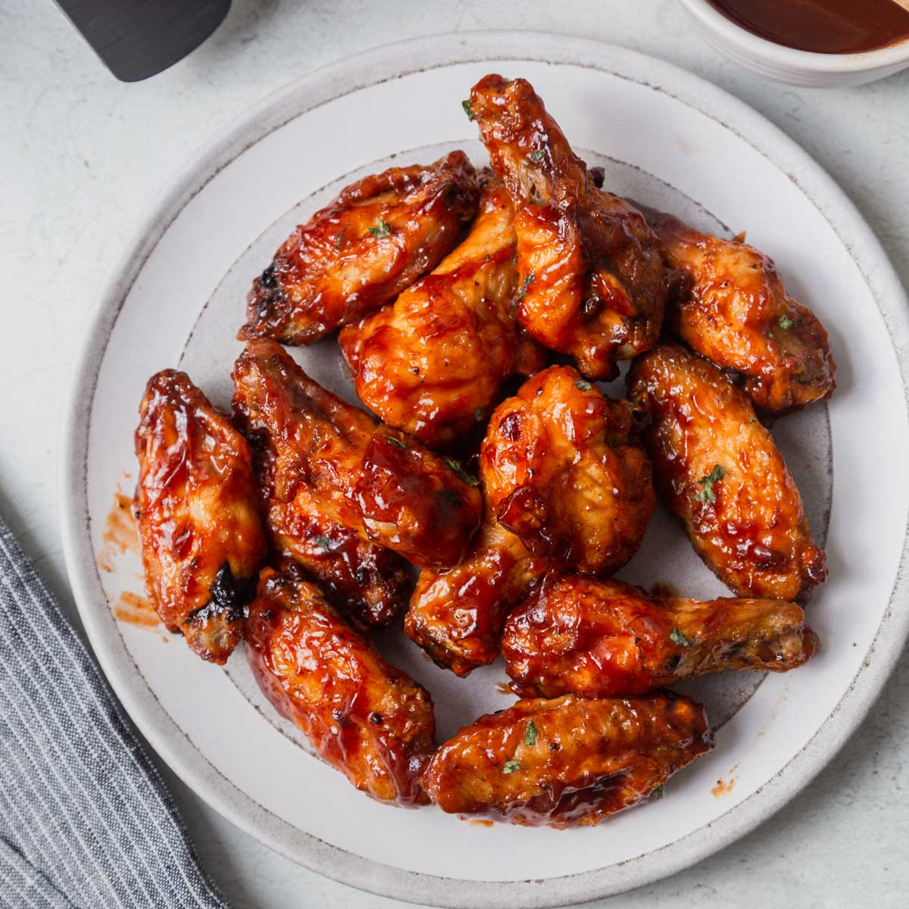

Home
Crunchy Chicken Wings

Description
This one is a great recipe for the lazy cooks out there. Thees crunchy easy-to-make chicken wings are a delicacy which will only take about 40-50 min to completely finish. All you need are some basic ingredients like soy sauce, some spices and seasonings and a large pan to store all of the chicken wings. Overall, this is the perfect low-effort meal that can be served to up to 4 people!
Ingredients
- Chicken wings: Any will do, they just have to be fresh, non-frozen and non-skinned.
- Soy sauce: Depending on your taste, you can choose different types of soy sauce, you just need lots of it.
- Water: Yes, you do need water. It is mainly used for the purposes of maintaining the softness of the white meat, while also making the chicken skin crunchy.
- Sides: This dish doesn't include a side to it but you can use whatever you prefer!
Steps
- Place chicken wings: Take your biggest pan and place all your chicken wings evenly around the pan.
- Pour a mixture of water and soy sauce: Split the water and soy so that ratio is 2:1 subsequently. The mixture should cover a little bit over the halfway line of the chicken wings.
- Place in the oven: Place the pan in a preheated oven (around 200-220 degrees C), you should cook it for at least 40 minutes, while gently turning over the chicken pieces from time to time.
- Serve with a side to your liking: When the chicken is done cooking, serve the wings with a side of your choice!